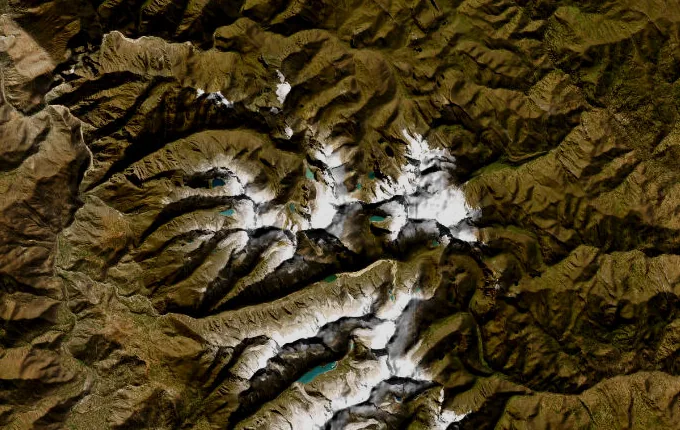
2,107–4,771 m
Alpamayo Circuit
PaidPeru
Circle the world's most beautiful mountain through Peru's Cordillera Blanca.
- 120 km
- 16 landmarks
- 4,771 m high point
- ~4,690 m climb
- about 3 weeks
Thirty-six of the world's great long walks, each a complete route with its own landmarks and its own medal. Start free on the Inca Trail. Buy any other once and it is yours to keep. Every map below traces the real route, with a pin at every landmark whose story opens as you walk, and under it the trail's real climb, measured from the ground itself.

Peru · 43 km · 12 landmarks
Forty-three kilometres of Inca stone, from the permit gate on the Urubamba river up through the cloud forest to the Sun Gate and Machu Picchu. About 5,000 steps a day walks it in roughly a month. It is free, and it needs no account.
Every profile below is the real ground under the route, sampled from a public 30 m elevation model — not drawn by hand and not copied from a guidebook. A “~” means the figure is close, not exact. On 25 of the 36 trails our route line runs straighter than the walked path does, so it can cross ground the real trail contours around, and the heights it reads there run a little high. The shape is right; those numbers are approximate, and we would rather say so. On the other 11 the track is fine enough to trust, and those cards also carry a total climb.

Peru
Circle the world's most beautiful mountain through Peru's Cordillera Blanca.
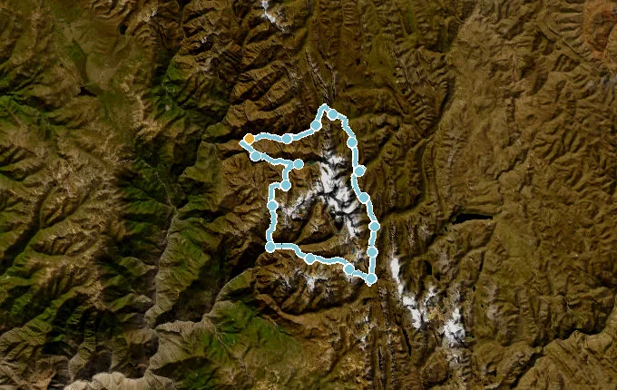
Peru
A high, wild loop around Peru's most savage ice giants.
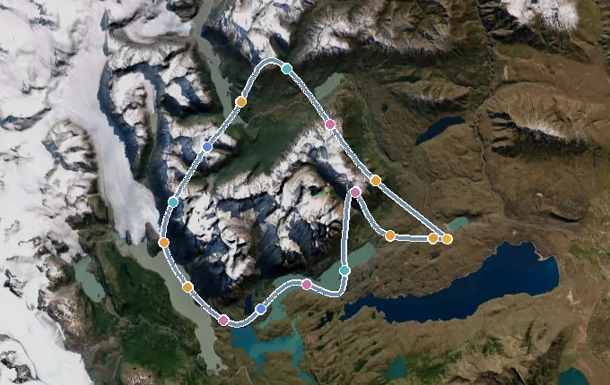
Chile
The full 130 km Paine Circuit — wild back country, ice field, towers.
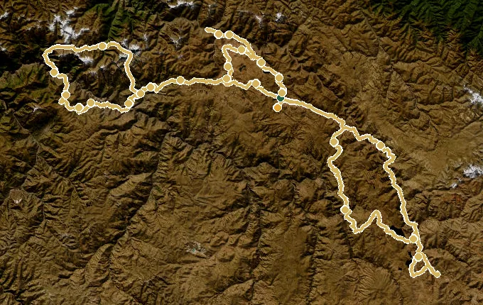
Peru
The royal highway of the Inca, threading the high Andes around Cusco.
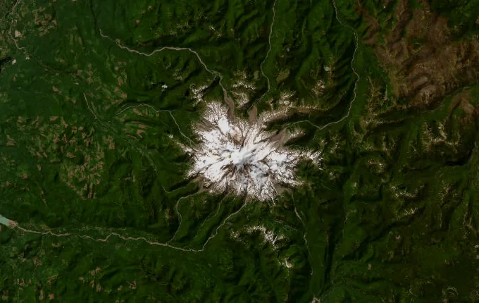
USA (Washington)
The 93-mile loop circling Mount Rainier's glaciers and meadows.
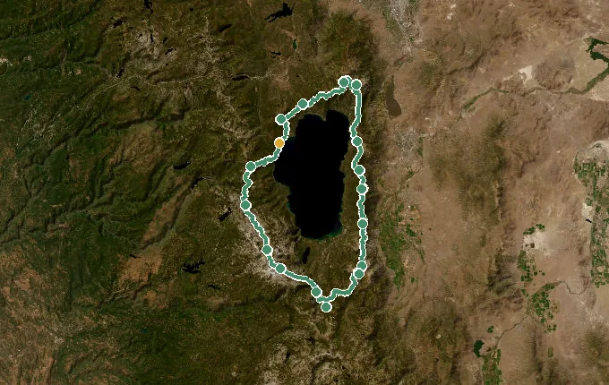
USA (California/Nevada)
A full ring around the largest alpine lake in North America.
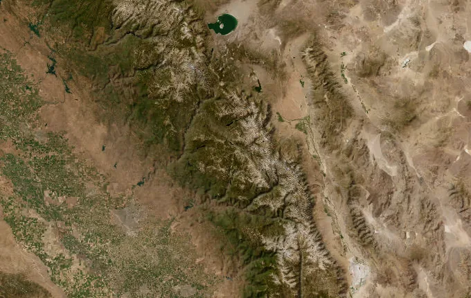
USA (California)
Cross the High Sierra from Yosemite to the summit of Whitney.
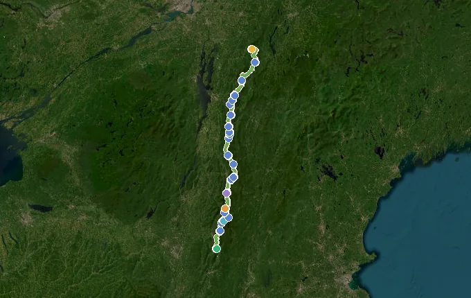
USA (Vermont)
America's first long trail, up Vermont's Green Mountains to Canada.

USA
The classic ridgeline of the eastern United States, Georgia all the way to Maine.
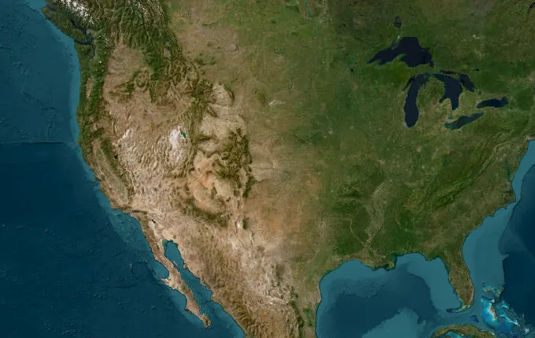
USA
The mother road across America, Chicago to the Santa Monica pier.

USA
Desert, the High Sierra and deep forest, from Mexico to the Canadian border.

Scotland
Scotland's classic: Loch Lomond, Rannoch Moor, Ben Nevis.

France/Italy/Switzerland
Walk the classic loop around Mont Blanc through three countries.
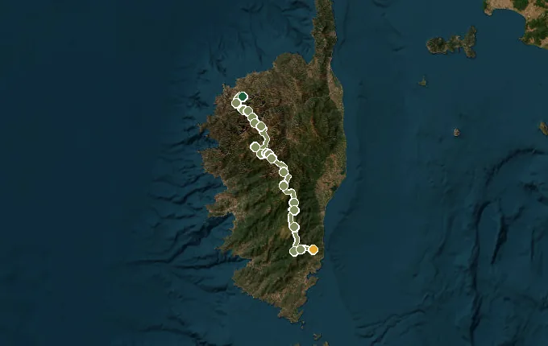
Corsica (France)
Europe's toughest trek, north to south across Corsica's granite spine.
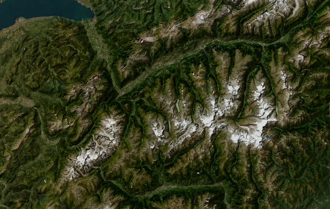
France / Switzerland
Mont Blanc to the Matterhorn across eleven alpine passes.

Sweden
Sweden's Arctic long trail through the wilds of Lapland

Spain
The old pilgrim way across northern Spain to Santiago de Compostela.

United Kingdom
End to end across Britain, Land's End up to John o' Groats.
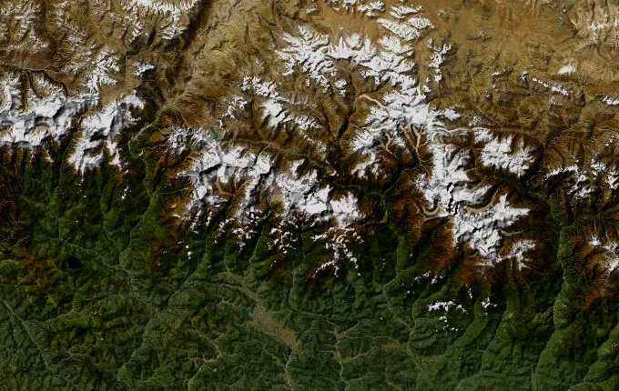
Nepal
Cross the mighty Thorong La to Muktinath's sacred eternal flame.
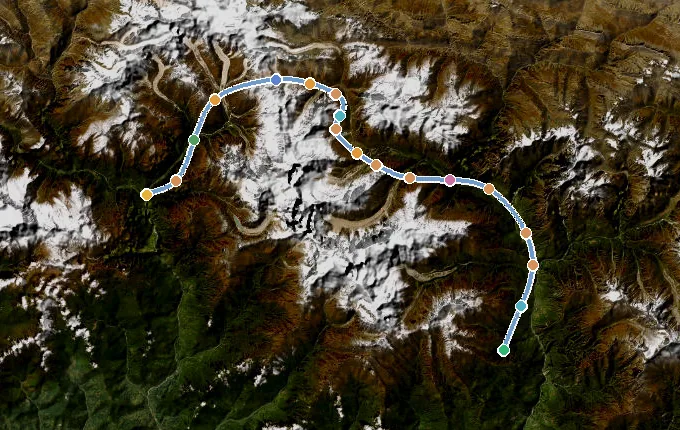
Nepal
Circle the world's eighth-highest peak through hidden Tibetan Nepal.

Japan
The Edo-period mountain road through Japan's cypress heart to Kyoto.
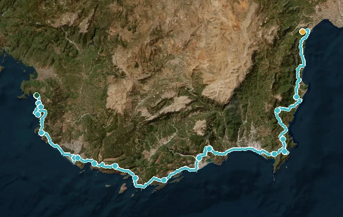
Turkey
Turkey's waymarked coast path past ancient Lycia
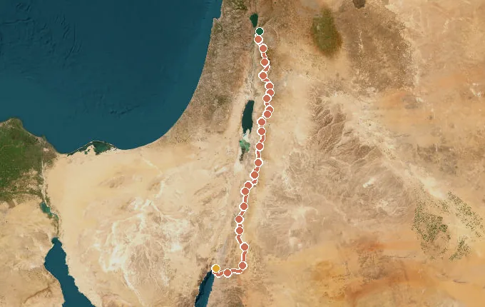
Jordan
The whole length of Jordan, olive north to Red Sea

Japan
Walk the ancient circuit of 88 temples around the island of Shikoku.
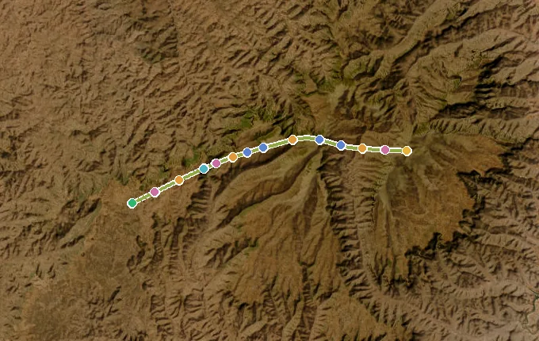
Ethiopia
Cross Ethiopia's roof to its highest, wildest summit
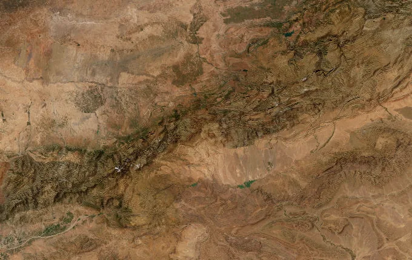
Morocco
M'Goun to Toubkal — the roof of North Africa on foot.
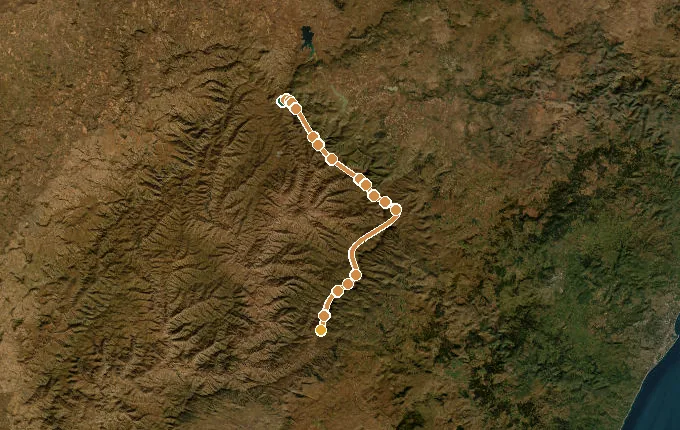
South Africa / Lesotho
Two hundred kilometres of unmarked basalt roof, above 3,000 metres
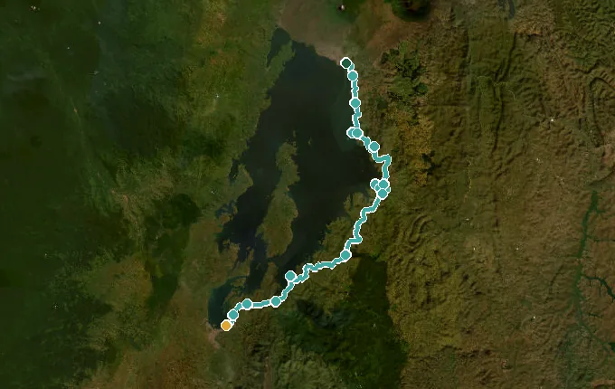
Rwanda
Rwanda's Lake Kivu shore of tea, coffee, islands and rainforest.
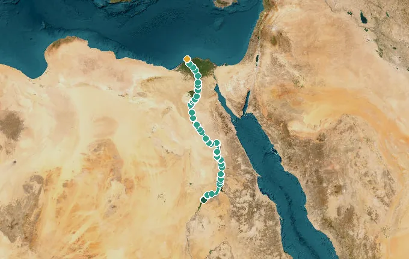
Egypt
Trace the world's longest river north to the Mediterranean coast.
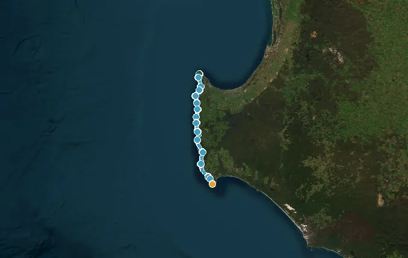
Australia (WA)
Two capes, two oceans and Margaret River's wild surf coast.
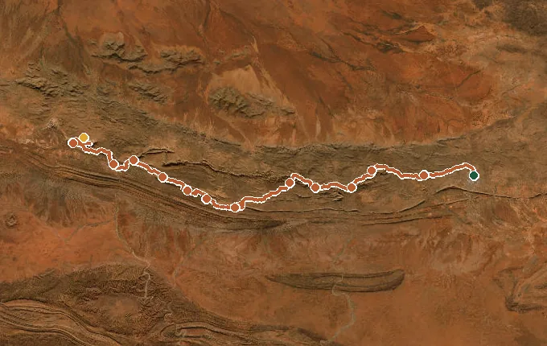
Australia (NT)
Desert ridges and waterholes across Arrernte country to Mount Sonder.
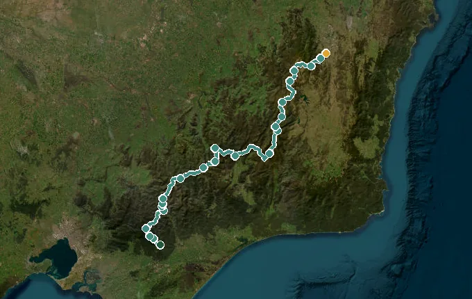
Australia (VIC/NSW/ACT)
The roof of Australia — snow gums, huts and alpine summits.

Australia
Through the tall forests and granite coast of south west Australia to Albany.

New Zealand
The length of New Zealand, Cape Reinga down to Bluff.
Antarctica
Ski the final degree of latitude to 90° south.
Satellite imagery: Esri, Maxar, Earthstar Geographics, and the GIS User Community.
Free to start on the Inca Trail, on the watch and phone you already own.